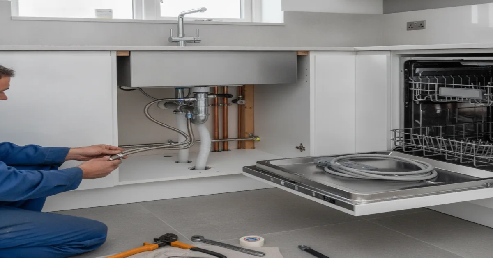
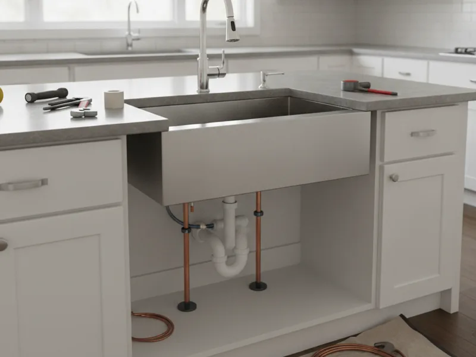

Kitchen Plumbing Remodeling in Armonk, NY
Relocating the sink, adding an island, or plumbing in a dishwasher for the first time — we handle the plumbing work your kitchen renovation needs, from planning through the final hookup.
- Licensed & Insured
- Upfront Pricing
- 15+ Years of Experience
- Same-Day Service Available

Our process
This is plumbing work only — fixture moves, supply and drain lines, and appliance hookups. We don't do cabinetry, countertops, or design work; that stays with your contractor or designer, and we coordinate around their schedule.
We start by reviewing your new layout — where the sink is going, whether there's an island, and which appliances need a water or drain connection. Then we locate your existing supply and drain lines so we know what we're building from.
From there, we run new supply and drain lines to the new fixture locations, including any dishwasher or refrigerator water lines. This rough-in work happens before cabinets and countertops go in, since it's the last easy chance to make changes.
Once cabinets and countertops are in place, we come back to connect the sink, faucet, dishwasher, and any other fixtures, and test every connection for leaks before we consider the job finished.
Cost factors
What the plumbing work involves depends on a few things: how far the sink or island is moving from the existing lines, whether a new drain vent needs to be added, how many appliances need a water hookup, and how accessible the existing pipes are behind your cabinets and walls.
An island sink usually adds complexity, since the drain and vent have to run under the floor rather than through a nearby wall. We look at your specific layout and give you a clear price before work starts, so there's nothing to guess at once demo begins.
Local factors
A lot of the kitchens we work on in Armonk and the surrounding towns were built decades ago, before dishwashers were standard or island layouts were common. Homeowners want to add a dishwasher where there's never been a water or drain line, or center an island over a spot where there's no plumbing at all.
That means we're often adding capacity the original kitchen was never plumbed for, not just relocating what's already there. We plan the new lines to reach cleanly from the existing supply and drain, without leaving exposed pipe or awkward routing under the new cabinetry.

Planning tips
- Finalize your sink, island, and appliance locations before the plumbing rough-in — changes after that mean redoing work.
- Decide on a dishwasher and its exact location early if you're adding one for the first time.
- Let us know if you're adding a garbage disposal, since it can affect drain sizing and layout.
- Coordinate our schedule with your cabinet installer so the plumbing is roughed in before cabinets go down, and finished after countertops go on.
When to call a pro
Call us as soon as your kitchen layout is settled, ideally before you order cabinets. If you're mid-renovation and just decided to add an island sink or dishwasher, call us right away so we can plan the connection before it's too late to route it cleanly.
While the plumbing is already open, it's also a good time to handle hooking up your new dishwasher, installing a new kitchen sink, or repiping to support the new layout if your existing lines need updating.
For the full picture of what a remodel involves on the plumbing side, see our bathroom and kitchen plumbing work, or see the rest of our plumbing services for anything outside of remodeling. For general planning guidance on kitchen layouts and plumbing placement, HGTV has useful background on what to consider before finalizing a design.
Frequently asked questions
Can you add a dishwasher where there's never been one?
Yes. We run a new water supply and drain connection to the dishwasher location as part of the remodel.
What's involved in plumbing an island sink?
Island sinks need a drain and vent routed under the floor, since there's no nearby wall to run through. We plan this early, since it affects the layout underneath.
Do you handle moving the kitchen sink to a new wall?
Yes. We relocate supply and drain lines to the new sink position as part of the rough-in work.
How far in advance should I schedule the plumbing work?
As soon as your layout is finalized, ideally before cabinets are ordered. That gives us time to plan lines correctly the first time.
Do you coordinate with my cabinet installer or contractor?
Yes. We schedule the rough-in before cabinets go in, and the final connections after countertops are installed.
Can you upgrade the drain line if I'm adding a garbage disposal?
Yes, we'll size and route the drain to handle the disposal as part of the remodel plumbing.